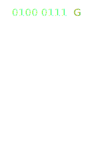
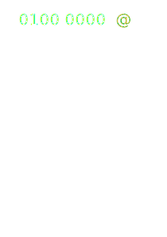
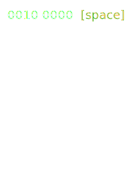

Глиф - графическое представление символа. Например символ кириллицы " ї " можно записать прописью " ї ", с большой буквы " Ї " и т.п. - все это будут разные глифы одного символа.
Шрифт - Набор глифов одного стиля. Причем шрифт может содержать глифов меньше или больше чем число символов языка, т.е. шрифт зависит от задач визуализации и не обязан полностью описывать все возможные символы.
Character set - таблица, задающая кодировку множествe символов алфавита (обычно элементов текста: букв, цифр, знаков препинания). Такая таблица сопоставляет каждому символу последовательность длиной в один или несколько символов другого алфавита (нулей и единиц (битов) в компьютере, точек и тире в коде Mорзе, сигнальных флагов на флоте).
  font-family: "Arial Black", "Helvetica CY", "Nimbus Sans L" sans-serif;
Подключение стандартных шрифтов работает только если у пользователя в системе есть такой шрифт.
| Windows | Mac OS | Unix/Linux | семейство |
|---|---|---|---|
| Arial | Helvetica | Ubuntu | sans-serif |
| “Times New Roman” | Times | Segoe | serif |
Важно указывать правильный порядок указания типов, т.к. браузер подключит первый, который сможет найти или скачать. Поиск начинается с крайнего левого типа.
При отсутствии в системе перечисленных типов стоит указать семейство:
@font-face - это инструкция как загрузить указанный шрифт.
@font-face {
font-family: "League Gothic"; // присвоим имя
src: url('fonts/League_Gothic-webfont.ttf'); // укажим путь к файлу css
}
Можно указать несколько путей с разными форматами шрифтов. Подключаться будет первый найденный и скачанный (начало - вверху).
Поддержку браузерами формата шрифтов всегда можно проверить на caniuse
Один шрифт - одна директива @font-face
Если название шрифта разделено пробелом, то название надо брать в кавычки.
Отдельный файл шрифта содержит только одну плотность и один стиль для этого шрифта.
Как подключать разные версии плотность и стилей на одно и то же имя font-family
/* обычный шрифт */ @font-face { font-family: 'PTSans'; указываем семейство шрифтов, а не имя шрифта: PTSansRegular src: url('PTSansRegular.woof') format('woff'), url('PTSansRegular') format('truetype'), url('PTSansRegular.svg') format('svg'); font-weight: normal; font-style: normal; } /* италик */ @font-face { font-family: 'PTSans'; src: url('PTSansItalic.woof') format('woff'), url('PTSansItalic.ttf') format('truetype'), url('PTSansItalic.svg') format('svg'); font-weight: normal; font-style: italic; }
Как подключать разные версии плотность и стилей на одно и то же имя font-family
/* полужирный */ @font-face { font-family: 'PTSans'; src: url('PTSansBold.woof') format('woff'), url('PTSansBold') format('truetype'), url('PTSansBold.svg') format('svg'); font-weight: bold; font-style: normal; } /* комбинированный */ @font-face { font-family: 'PTSans'; src: url('PTSansBoldItalic.woof') format('woff'), url('PTSansBoldItalic.ttf') format('truetype'), url('PTSansBoldItalic.svg') format('svg'); font-weight: bold; font-style: italic; }